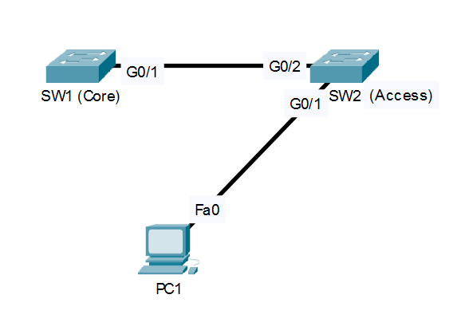

Cisco IOS Software, C2960 Software (C2960-LANBASE-M), Version 12.2
CONSOLE CONNECTION TO SW1 ESTABLISHED.
VLAN 10: Loop detected on Gi0/1 and Gi0/2.
High CPU utilization reported.
SW1#

Ticket ID: #1092
Severity: Critical (Network Storm)
Issue: Redundant Gigabit uplinks have caused a loop on VLAN 10.
Task: Designate SW1 as the Root Bridge for VLAN 10.
Severity: Critical (Network Storm)
Issue: Redundant Gigabit uplinks have caused a loop on VLAN 10.
Task: Designate SW1 as the Root Bridge for VLAN 10.
Identify the current Root Bridge by checking STP status.